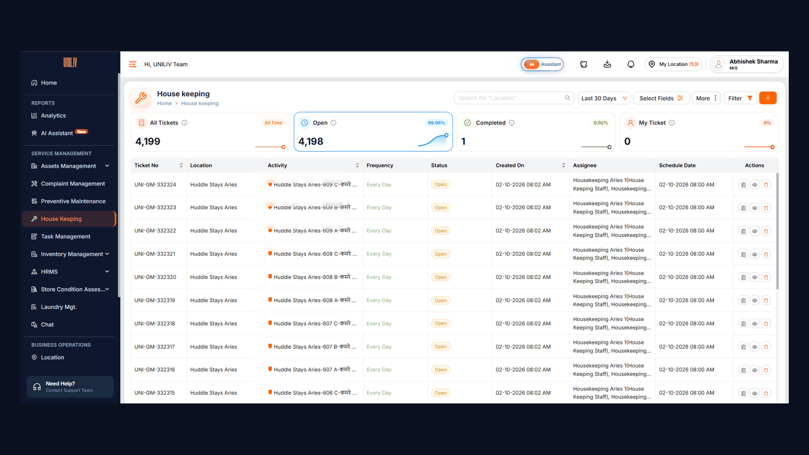

Four activities, one property, no common system
Every property needs four kinds of facility work. Housekeeping covers daily room cleans and common-area rounds: UniLiv rooms are cleaned daily, Huddle Stays rooms on alternate days, and reception, lobby, lifts and washrooms on an hourly or shift schedule. Deep cleaning runs on a cycle and after every move-out. Pest control is done by licensed vendors on a schedule and after complaints. Horticulture keeps garden areas watered, weeded and mowed.
Where this module fits: Facility Services Management is one module, and housekeeping is one of its four activities. Asset upkeep (electrical, servo, water tanks, curtains and vehicles) runs in the separate Preventive Maintenance module, and property quality is checked independently by the Audit module.
No proof, no status, no measure
- No proof. A ticked register line, a WhatsApp photo or a vendor invoice couldn't show which room or area was treated, when, or by whom.
- No live status. Unit Leads found out a room was missed, or a pest visit skipped, only when a resident complained.
- No link to complaints. A hygiene or pest complaint didn't trigger a deep clean or a treatment, and nobody checked whether the problem came back.
- No measure. Staff productivity and vendor performance couldn't be compared across properties.
What shaped the design
- Four activities, one shape. A room clean, a deep clean and a pest visit all need the same things: a location, an assignee, a start and end time, and proof. That meant one ticket model could run all four, with evidence rules set per activity.
- A missed room isn't always a staff failure. Rooms went uncleaned because of DND, residents refusing entry, locked rooms, sleeping residents or ongoing maintenance. A missed clean now needs a reason, and DND needs a photo.
- Verification effort should match risk. Daily cleans are high-volume, so the Unit Lead verifies, rates or reopens them from live status. Deep cleaning and pest control are higher-risk, so the Unit Lead must re-scan the same QR on site to verify.
- Not every activity needs an app. Gardening is simple and mostly done by vendors, so horticulture runs as backend tickets that the Unit Lead closes, with no gardener login.
- Rooms already had QR codes. Room QRs were already in place, so the module reuses them and only adds Area QRs for common areas, kitchens, drains and perimeters. One QR can serve several activities.
One task engine, not four apps
| Option | For | Against | Call |
|---|---|---|---|
| Keep paper registers, WhatsApp photos and vendor invoices | No change for staff or vendors | No proof of location or time; nothing to measure | Rejected |
| A separate app for each activity | Tailored to each team | Four ticket models to maintain; staff who do housekeeping and deep cleaning switch apps | Rejected |
| Photo proof on every single task | Maximum evidence | Slows daily room cleans; low-risk tasks don't need it | Rejected |
| One QR task engine for all four activities, with evidence and verification rules matched to each activity's risk | One model, one dashboard; proof where it matters | Needs Area QR codes installed in every common area | Chosen |
What we deliberately left out: resident feedback and notifications, attendance integration, vendor invoicing, chemical and consumables inventory, and offline mode. All are useful, but none is needed to prove the work happened.
Scan to start, evidence to close, live status to manage
Every task in the module, whatever the activity, moves through the same states:
- AssignedUL · schedule · move-out · complaint
- In progressRoom / Area QR starts timer
- CompletedActivity's mandatory evidence
- VerifiedUL verifies, rates or reopens
Side paths: Failed (with a reason), Missed (not done in time) and Reopened (UL rejects, staff must re-scan the QR to start again).
The four activities
| Activity | Done by | Where | Frequency | Proof to close |
|---|---|---|---|---|
| Housekeeping | In-house staff | Rooms, common areas | Daily (UniLiv); alternate days (Huddle Stays); hourly or per shift for common areas | QR scan + complete; after photo for common areas |
| Deep Cleaning | In-house staff or vendor | Rooms, common areas | 30-day cycle, move-out, hygiene complaint or on demand | QR + checklist + at least 2 after photos + UL re-scan to verify |
| Pest Control | Licensed vendor | Rooms, areas, perimeter | Monthly or quarterly, plus on complaint | QR per location + pest, method and chemical log + photo + UL sign-off |
| Horticulture | Gardener (in-house or vendor) | Garden areas | Daily to monthly, by task | Backend ticket closed by UL; after photo optional |
How each activity works
- Housekeeping: the Unit Lead assigns rooms and common-area tasks each day and the system generates a ticket for each; auto-schedule covers UniLiv rooms daily and Huddle Stays rooms on alternate days (odd and even). Staff scan the room QR, clean per SOP and tap Complete. Failure reasons: DND (photo mandatory), resident denied, room locked, resident sleeping, maintenance in progress, requested later, or other.
- Deep cleaning: a configurable checklist per location type (fan, windows, bathroom descaling, under-bed, wardrobe, switchboards, walls), plus a weekly common-area plan (Mon fans, Tue dispensers and mats, Wed glass, Thu furniture, Fri dustbins, Sat store, Sun full deep clean). A verified move-out clean marks the room ready for the next resident, and a failed scheduled clean reschedules itself within 3 days.
- Pest control: one visit is one ticket with a list of locations, each scanned and logged separately. Untreated locations are marked skipped with a reason and carried to a mop-up visit. Pest complaints create a linked task with an automatic follow-up check 7 days later, and coverage below 90% needs a Unit Lead remark.
- Horticulture: the Unit Lead or Ops Excellence sets up recurring tasks per garden area (watering, litter removal, weeding, mowing, manuring). The system creates a ticket for each occurrence, and the Unit Lead marks it done or skipped (rain, water supply, tools unavailable) from the backend.
- Full record on every task: property, location, assignee, start and end time, duration, photos, checklist, GPS where enabled, verifier and rating.
- Guardrails: staff and vendors can't see others' tasks, edit completed tasks, delete or reassign tickets, or close a task without its mandatory evidence.

Alerts and dashboards
| Who | Gets alerted on |
|---|---|
| Housekeeping staff · pest technician | Task assigned, reminder, missed task, reopened task, visit reminder |
| Unit Lead | Failed or delayed tasks, items awaiting verification or sign-off, low productivity |
| Cluster Manager | SLA breaches, missed vendor visits, repeat pest complaints, compliance below target |
| Ops Excellence | Weekly vendor and SOP compliance summary |
The Unit Lead's Today view shows total, completed, pending, in-progress and failed tasks across all activities, plus anything awaiting verification. Separate views cover each activity: room and staff status for housekeeping, due and overdue rooms for deep cleaning, zone status for horticulture, and next visits and coverage for pest control. Cluster and Ops get property-wise compliance and a vendor scorecard.
Who does what
| Role | What they do |
|---|---|
| Housekeeping staff | Own housekeeping and deep-clean tasks: scan, start, complete, upload photos, mark failed with a reason |
| Pest control technician (vendor) | Assigned visits only: scan per location, log chemical and dosage, upload photos, mark skipped |
| Unit Lead | Assign tasks, see live status, verify, rate or reopen, sign off vendor visits, close horticulture tickets, view reports |
| Cluster Manager | Multi-property dashboards, approve unscheduled vendor visits, audits |
| Ops Excellence | Configure schedules, checklists and SLAs; compliance and vendor analytics |
| Admin | Full access, vendor onboarding, QR generation |
Ship what shares the most, first
| Phase | Activities | Why this order |
|---|---|---|
| 1 | Housekeeping + Deep Cleaning | Same staff and the same room QRs: highest volume, lowest setup |
| 2 | Pest Control | Needs vendor onboarding and the link to the complaint system |
| 3 | Horticulture | Lowest risk; scheduled and closed from the backend |
Phase 1 starts by installing Area QR codes in every common area, then a pilot at a few properties with paper registers running in parallel. Paper goes away only once compliance holds steady.
Targets set before launch
Results will be published here after rollout. These are the targets agreed in the PRD, measured against the paper-register baseline:
| Activity | Metric | Target |
|---|---|---|
| Housekeeping | Room-cleaning compliance | 95%+ |
| Housekeeping | Missed tasks vs paper baseline | 80% reduction |
| Housekeeping | Common-area compliance | 95%+ |
| Deep Cleaning | Cycle compliance (done within cycle ÷ due) | 95%+ |
| Deep Cleaning | Move-out turnaround to room-ready | ≤ 24 h |
| Pest Control | Visit adherence (on the scheduled date) | 100% |
| Pest Control | Average location coverage | 90%+ |
| Horticulture | Task compliance | 95%+ |
| All | QR-validated tasks | 100% |
| All | SLA compliance | 90%+ |
| All | Average Unit Lead quality rating | 4 / 5+ |
Also tracked: average task time, staff and vendor productivity, failed tasks by reason, and the share of DND and denied rooms.
What writing the PRD taught me
- Drawing clear module boundaries mattered more than any feature. Grouping housekeeping, deep cleaning, pest control and horticulture as activities in one module, and keeping asset upkeep in Preventive Maintenance, gave each module one owner, one kind of work and one set of metrics.
- Evidence and verification should match risk. Daily cleans rely on a QR scan, time and duration; common areas need a photo; deep cleaning and pest control need an on-site re-scan; and horticulture needs only a backend ticket. One engine, four levels of proof.